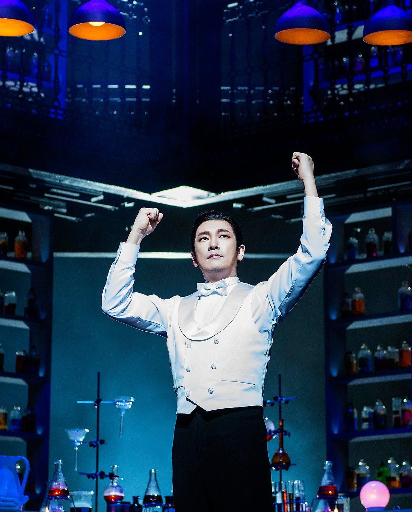

사실 굉장한 고전이기에 스토리가 주는 충격은 굉장히 작았다.
하지만 이 뮤지컬이 TOP4에 오를 수 있었던 유일한 이유는 조승우라는 배우덕이다.

조승우가 아닌 다른 배우의 지킬앤하이드 연기를 보았다면 이만큼 감동할 수 있었을까?
내가 그곳에서 보았던 것은 조승우라는 인물 한국은 모두 지워진 해리성 인격장애를 앓고있는
한 의사 그뿐이었다.
그동안 수많은 배우들의 연기력에 대해 잘한다 못한다 말을 했지만
조승우의 연기는 연기라 부르지 못할만큼 삶 그자체였다.
사실은 조승우가 지킬인거 아닐까? 라는 우스갯 소리가 단전에서 나오는 진심으로 받아들여지는 연기